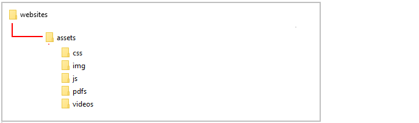
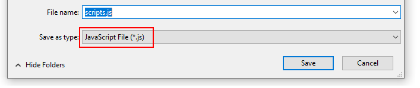
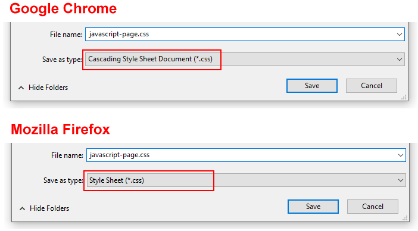
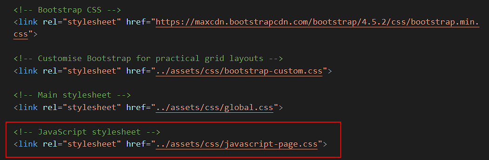
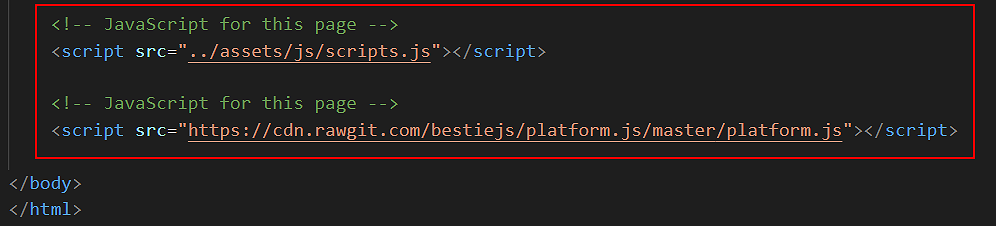

Introduction
In this Tutorial you will update the JavaScript web page of your personal website.
Creating an assets/js sub-folder
Smaller blocks of JavaScript code are typically added to a web page directly, and entered within a pair of opening and closing tags <script> ... </script>.
However, longer Javascriptt code blocks are usually entered in a separate file, with the file name ending in .js, and then linked to by the web page.
When the page displays in the user's browser, the page loads this external JavaScript file, in the same way that it loads CSS files, image files and video files.
Your first step is to create a sub-folder for holding JavaScript files:
- In Windows/File Explorer, inside your websites/assets sub-folder, create the following new sub-folder:
websites/assets/js
The assets sub-folder of your 'main' websites folder should now contain the sub-folders shown below.

An alternative name used by some web developers for the sub-folder that holds JavaScript files is "scripts".
Downloading the scripts.js JavaScript file
Now that you have created a sub-folder for storing JavsScript files, you are ready to download the file you need for your personal website.
- Click the link below to open the JavaScript file in a new tab of your web browser.
scripts.js
- Next, right-click anywhere on the JavaScript file and choose Save as... (Chrome) or Save Page As... (Firefox) from the context menu displayed.
- Save the JavaScript file in the assets/js sub-folder of your 'main' websites folder with the name scripts.js.

Ensure the Save as type: dropdown list is set to JavaScript File (*.js) as shown above.
You can now close the tab in your web browser showing the JavaScript file. All done.
Downloading the javascript-page.css stylesheet
There is a special stylesheet file just for the JavaScript web page of your personal website. Follow these steps to download it.
- Click the link below to open the CSS file in a new tab of your web browser.
javascript-page.css
- Next, right-click anywhere on the stylesheet file and choose Save as... (Chrome) or Save Page As... (Firefox) from the context menu displayed.
- Save the stylesheet file in the assets/css sub-folder of your 'main' websites folder with the name javascript-page.css.

Ensure the Save as type: dropdown list is set to the correct file type as shown above.
You can now close the tab in your web browser showing the stylesheet for the JavaScript web page. Task completed.
Updating your JavaScript web page links
Next, you will open the JavaScript page of your personal website and add some CSS and JavaScript links to it.
- In VS Code, open the JavaScript page of your personal website.
Its file name is index.html and it is located in the javascript sub-folder of your 'main' websites folder.
- To the head section of your web page, copy-and-paste the following new CSS link.
<>
<link rel="stylesheet" href="assets/css/javascript-page.css">
Position it just after all the other CSS links as shown below.

- Scroll down to the bottom of your JavaScript web page.
- Copy-and-paste the following two JavaScript file links, to just before the closing </body> tag.
<script src="../assets/js/scripts.js"></script>
<script src="https://cdn.rawgit.com/bestiejs/platform.js/master/platform.js"></script>
The last lines of your web page should now look as shown below.

- Save your index.html file, but do not close. You will next need to update its content.
Updating your JavaScript web page content
One final task remains: to update the content of your JavaScript page. Here are the steps.
- In the hero block section, update the <h2> sub-heading from just "JavaScript" to "JavaScript Coding".
- Directly under the hero block section is a <div> block with the two class names of container introduction-text.
Replace its content with the following heading and text.
<div class="wrapper-yellow">
<div class="container col-md-8 offset-md-2">
<h3>To get started, please introduce yourself</h3>
<div class="row js-box">
<div class="col-md-3">
<p>Your First Name:</p>
</div>
<div class="col-md-5">
<input type="text" id="fName">
<div id="error-msg" class="hidden"><p><i class="fas fa-exclamation-triangle"></i> At least two characters, please.</p></div>
<div id="resultfName" class="hidden"></div>
</div>
<div class="col-md-4">
<button onclick="checkInput()" class="btn btn-primary">Go <i class="fas fa-arrow-circle-right"></i></button>
<button onclick="resetUser()" class="btn btn-light">Reset <i class="fas fa-minus-circle"></i></button>
</div>
</div>
</div>
<div id="content-area" class="hidden">
<div class="container col-md-8 offset-md-2">
<div class="row js-box" style="margin-top:0">
<div class="col-md-9 offset-md-3" style="margin-bottom: 12px">
<div id="userOutput"></div>
</div>
<div class="col-md-9 offset-md-3">
<div id="browserOutput"></div>
</div>
</div>
</div>
<div class="container col-md-8 offset-md-2">
<h3>Show your location</h3>
<div class="row js-box" style="padding-bottom:40px">
<div class="col-md-4">
<p id="msgFoundYou"></p>
</div>
<div class="col-md-8">
<button id="btn-find-me" class="btn btn-primary">Where am I? <i class="fas fa-question-circle"></i></button>
<p id="allowPersmission">( Please allow location access when prompted.)</p>
<p id = "positionStatus"></p>
<p id = "lat"></p>
<p id = "lng" style="margin-bottom:28px"></p>
<p id="map-block"></p>
</div>
</div>
</div>
</div>
</div>
- Save your index.html file.
In your web browser, verify that the JavaScript code in your web page works correctly on large and mobile screen sizes.
Uploading your website to GitHub
The final step is to upload your website pages and folders to GitHub.
- Sign in to your GitHub account and, at the left of the screen, click the name of the repository that holds your web pages.
- On the next screen, click the Add file button and then choose Upload files from the dropdown list.

- In File/Windows Explorer on your computer, display your websites folder and then drag-and-drop the following files and sub-folders to the GitHub tab in your web browser.

- Scroll down to the bottom of the GitHub screen, and accept or edit the short message (Add files via upload) in the Commit changes box.
Finally, click the green Commit changes button to upload your files and folders.
Your JavaScript web page is now published on GitHub, at an web address similar to the following, where username is the username you have chosen for your GitHub account:
https://username.github.io/javascript
It may take a few minutes for your uploaded files to appear on GitHub.
Return to Contents.